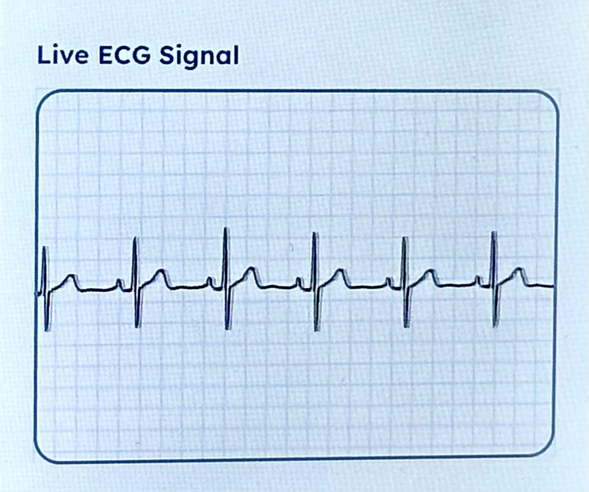
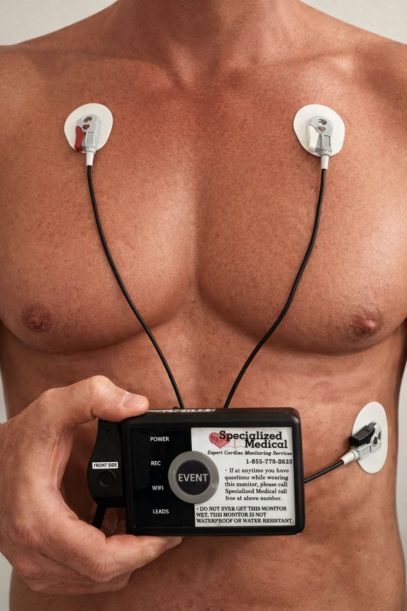
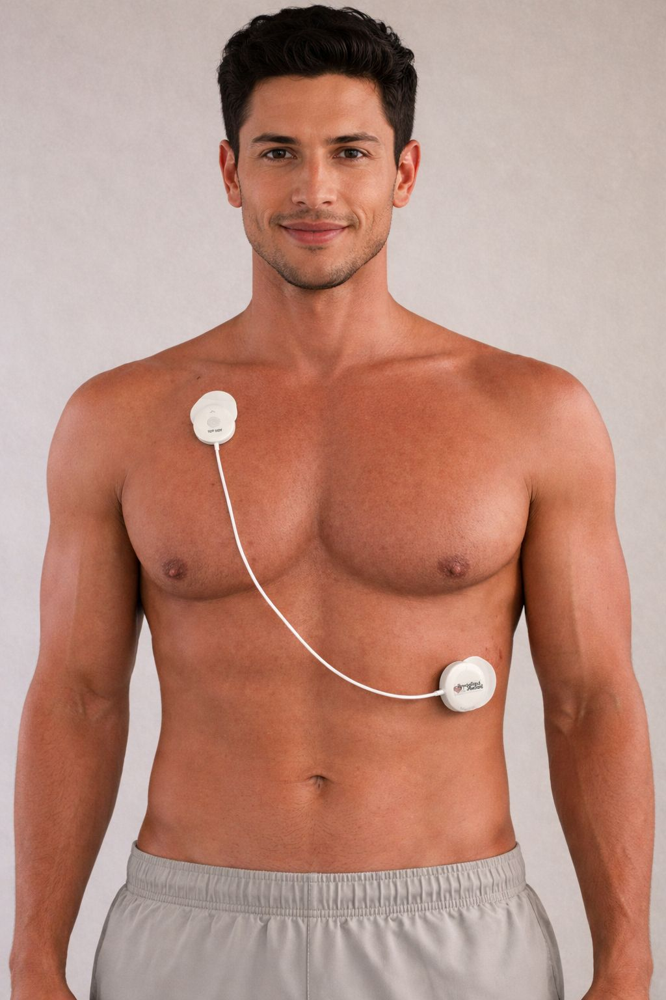

Our Services
Services Built for Modern Physician Practices
Live ECG data, streamlined workflow, and turnkey monitoring support.
Services Summary
One system, Multiple Monitoring Options.
Extended Holter
Extended Holter
Event Monitoring
MCT (Telemetry)
MCT (Telemetry)
Four test types,
one consistent workflow
Support Holter, Extended Holter, Event Monitoring, and Telemetry (MCT) through a turnkey monitoring program built around the S-Patch Monitoring System.


Live Streaming,
Real-Time Data
Our platform is designed for continuous, resilient real-time data streaming across a wide range of patient environments, including rural areas. This supports uninterrupted data capture, reduces the likelihood of incomplete studies, and gives physicians greater confidence in every test. Data is sent live to our monitoring center—no manual uploading, no data delays.
Monitoring Equipment Options
The S-Patch Monitoring System
Primary Featured System. The S-Patch Monitoring System is Specialized Medical’s primary featured monitoring solution. It supports Holter, Extended Holter, Event Monitoring, and Telemetry (MCT) while delivering live-streaming, real-time ECG data through a compact, patient-friendly design.
Our platform is designed for continuous, resilient real-time data streaming across a wide range of patient environments, including rural areas. Data is sent live to our monitoring center—no manual uploading and no data delays.
- Primary featured system for Specialized Medical
- Supports Holter, Extended Holter, Event Monitoring, and Telemetry (MCT)
- Live-streaming, real-time ECG data
- No manual uploading


Lead-Wire
Monitoring System
Secondary / legacy monitoring option. Lead-Wire remains available as an older secondary monitoring option where appropriate. It is shown separately so practices understand it is not the primary system being promoted.
- Secondary option where needed
- Separate system from S-Patch
Streamlined Workflow
for Your Office
Your medical assistant completes a simple 3-step process: Enroll in web Portal → Hook Up → Disconnect (Under 15 Minutes)
Once the patient leaves, we take over the rest:
24/7 live monitoring across all test types
Real-time arrhythmia alerts by email, text, or phone call
Automatic generation and delivery of final reports
Patient support through our 24/7 multilingual call center
Detailed Reporting That Supports Faster Clinical Decisions.
Symptomatic vs. Asymptomatic Clarity
Patient symptoms are entered digitally during the test and automatically populate on the final report above the corresponding ECG strips, making it immediately clear whether an event was symptomatic or asymptomatic—with no separate handwritten symptom diary required.
ECG strip detail
Experience industry-leading ECG clarity, including precise P-wave definition. Our reports provide the granular detail necessary for accurate rhythm interpretation.
EMR-Ready Final Reports
Stop wasting time with manual data entry. Final reports are EMR-ready and can be pushed automatically into your existing system for a seamless digital record.
Streamlined Physician Interpretation Workflow
We have simplified the professional review process to fit into your busy schedule. Through our secure provider portal, you can manage the entire interpretation cycle in one place:
- Electronic review: Access comprehensive data and full-disclosure strips from any secure device.
- Professional interpretation: Document your findings directly within the digital report interface.
- Digital authentication: Finalize reports with an electronic signature, date, and time stamp—ready for billing and clinical filing.
Practice Integration
Made Easy
- Final reports are EMR-ready and can be automatically pushed into your system
- Electronically review, interpret, date, and sign final reports
- Customized billing templates with all CPT and ICD-10 codes provided
- We work directly with your billing staff or third-party biller for seamless claims submission
- Our portal tracks device usage and alerts your staff about any inactive or unreturned monitors
Clinical Proof
Featured patient and physician experience. Additional stories are available below on request.

S-Patch patient experience
S-Patch
Easy for Patients to Wear
"I wore the S-Patch Monitor from Specialized Medical all week. It was easy and hassle free. Was not a problem at all. The monitor I wore was very small. I didn't even realize I was wearing it. The technology is incredible. I'm looking forward to seeing the results, since I'm pretty sure I have occasional Afib. This monitor system is SO MUCH better than the old way!"
- R. Gall
See Live ECG &
Symptom Logging
Our platform streams ECG data in real-time, allowing physicians to monitor patients remotely with confidence. Patient symptoms are entered digitally and automatically populate on the final report, making it immediately clear whether an event was symptomatic or asymptomatic.
- Live ECG streaming for remote monitoring workflows
- Digital symptom logging tied to ECG events
- Clear symptomatic vs. asymptomatic labeling on the final report
Symptoms are logged digitally and matched directly to ECG events on the final report.
Patient-Friendly
Design
S-Patch weighs 0.6 oz (less than four sheets of paper), runs at least 10 days per battery, and is water-resistant (IP55)—with industry-leading ECG clarity, including precise P-wave definition. Lead-Wire specifications differ; see Monitoring Equipment Options.

Ideal for TAVR Programs
Post-TAVR Monitoring, Built for Continuity
Patients recovering from TAVR remain at risk for delayed conduction abnormalities and other clinically significant rhythm changes, making reliable post-procedure monitoring essential. Our monitoring system combines the S-Patch ECG monitor with an adaptive, multi-path cellular transmission platform designed for continuous, real-time ECG streaming. The differentiator is not simply the monitor itself, but the resilient connectivity infrastructure behind it, which helps maintain transmission across changing environments, including rural and lower-coverage areas. This supports more consistent ECG data capture and faster awareness of actionable rhythm changes to inform timely clinical decision-making.
Start Your No-Risk
Beta Trial
See how Specialized Medical can support your practice with: live-streaming ECG data; simplified office workflow.
Anyone can make promises. We would rather prove it. Try Specialized Medical on a few patients with no hassle and no obligation.